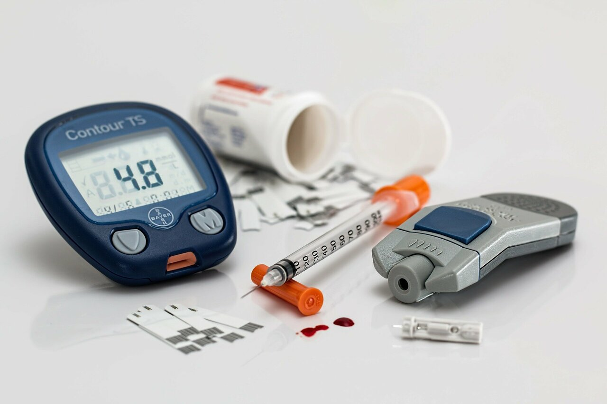
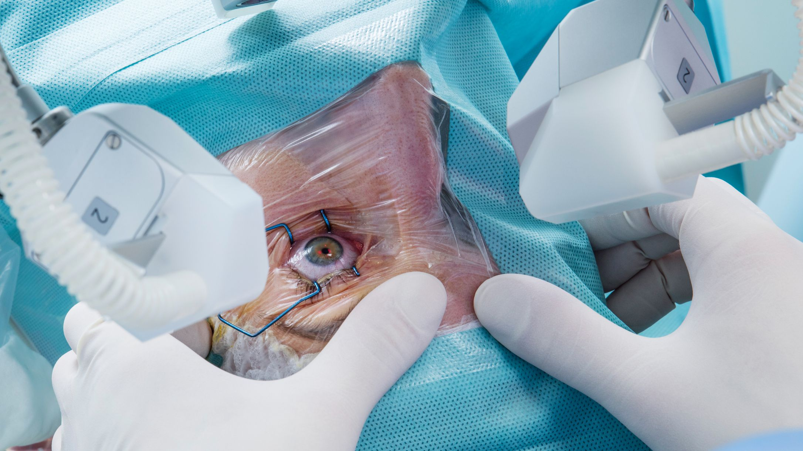
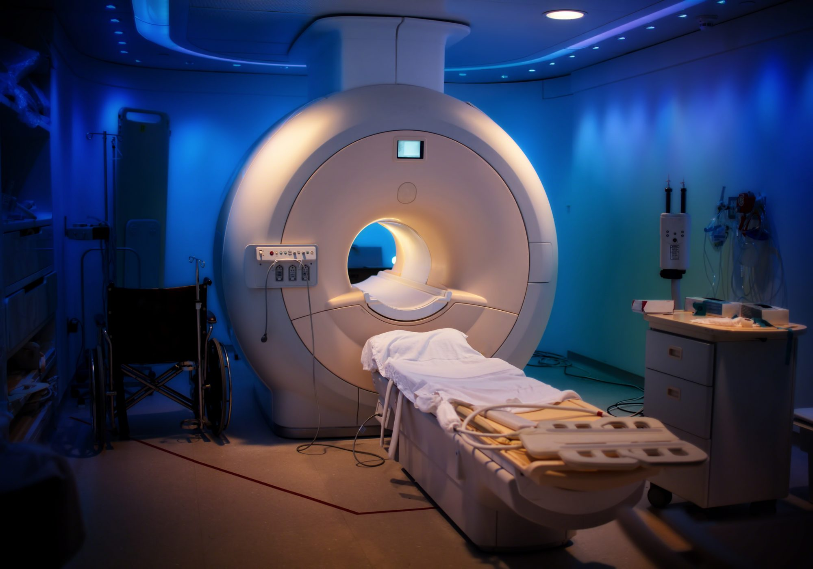
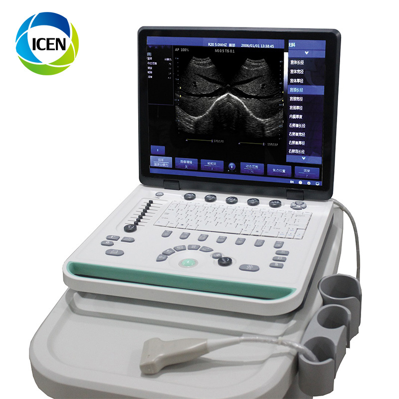
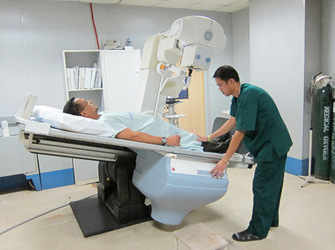

Sphygmomanometer
It helps the person to track blood pressure easily.
von Basch is the one who invented BP.
Learn more...

Insulin
It helps the person regulates your body's metabolism.
F. Banting is the one who invented this.
Learn more...

Lasik
It helps doctors to an easy way for eyes surgery.
Dr.Theodore Maiman is the one who invented this.
Learn more...

Magnetic Resonance Imaging
It helps the doctor to monitor treatment for a variety of conditions within the chest, abdomen and pelvis.
Raymond Damadian is the one who invented this.
Learn more...

Ultrasound
It is an imaging test that uses sound waves to create a picture of organs, tissues, and other structures inside the body.
T.Brown and O.Donald is the one who invented this.
Learn more...

X-ray
They're mainly used to look at the bones and joints of the person.
W.C. Röntgen is the one who invented this.
Learn more...